.
.
Spin–orbit
In the electron's rest frame the nucleus moves and produces
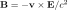
; with Thomas precession (factor ½) (Uhlenbeck and Goudsmit 1925; Thomas 1926):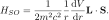
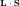
is diagonal in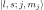
: first-order perturbation theory in the coupled basis.Fine structure
Adding
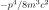
and the Darwin term (for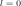
), all three combine to (Sommerfeld 1916)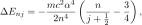
 :
: 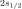
and stay degenerate (exactly as the Dirac equation predicts; the Lamb shift breaks it).
stay degenerate (exactly as the Dirac equation predicts; the Lamb shift breaks it).  :
: 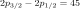
µeV (10.9 GHz).Zeeman effect
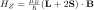
(Zeeman 1897).- Weak field (
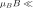
fine structure): project onto (projection theorem),
(projection theorem), 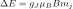
. - Strong field (Paschen–Back):
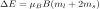
, then add spin–orbit as a correction.
Worked example
Sodium D lines,
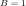
T: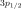
: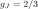
; :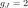
.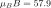
µeV. The D1 line splits into 4 components with shifts ,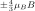
— the anomalous Zeeman pattern.Engineering applications
Zeeman-tuned atomic magnetometers, magneto-optical traps, laser frequency stabilisation (DAVLL), Zeeman slowers, clock transitions chosen with
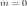
to be field-insensitive at first order.Pitfall
Using (orbital only) or
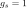
misses the factor 2 of spin; the electron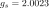
(g−2).